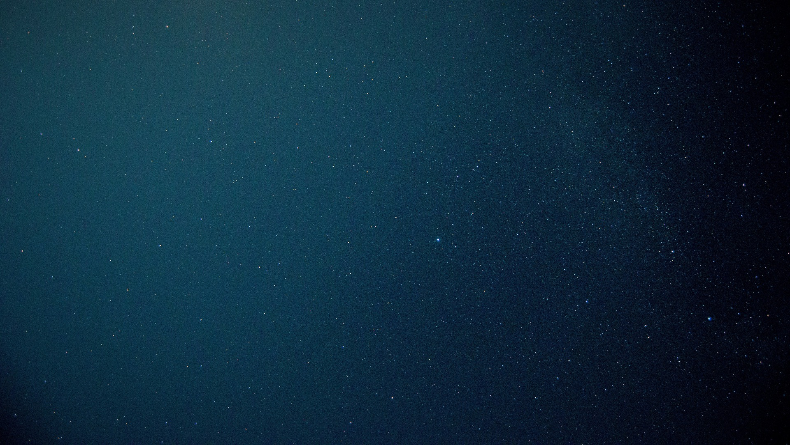

Туда и обратно. Как построен космический туризм
На пороге перемен
Туристические космические полеты
чем-то напоминают обещания «начать новую жизнь с понедельника».
Много разговоров и очень мало дела. За двадцать с лишним лет,
с начала нынешнего века, были написаны тысячи статей о космическом
туризме, а в реальности в космос за свои деньги слетали лишь семь
человек, один из которых – Чарльз Симони, глава и основатель
компании Intentional Software, – дважды.
Все космические туристические полеты были проведены при
помощи российских космических кораблей «Союз» в период с 2001
по 2009 гг. Эти полеты совершались на Международную космическую
станцию (МКС) и продолжались 10–14 суток. Чаще всего экипажи
на МКС работают по нескольку месяцев, поэтому турист прилетал
на станцию с одним экипажем, а возвращался на Землю уже с другим.
Цена на такой полет колебалась от $20 млн до 35 млн и
подразумевала достаточно длительный (до года) этап подготовки.
Подготовка проводилась в Звездном городке и включала в себя
как медицинские проверки, так и отработку возможных аварийных
ситуаций. Но вот уже почти двенадцать лет не было организовано
ни одного такого полета.
К счастью, 2021 год должен стать рубежным и резко изменить
ситуацию. До конца этого года в космос должны отправиться
сразу несколько миссий – как суборбитальных, так и более
серьезных полетов на МКС. Попробуем разобраться, что стоит
за этими названиями и можно ли уже становиться в очередь за
билетами.
У самой границы космоса
По определению Международной авиационной федерации,
космическое пространство начинается на высоте в 100 км
над уровнем моря. Эта граница называется линией Кармана
и взята достаточно условно. Нет ничего, что бы указывало
ее в реальном мире. Однако граница существует, и если вы
поднялись выше 100 км – вы уже космонавт. Именно на этом
допущении и строится суборбитальный туризм.
Чтобы просто поднять космический корабль с туристами до
этой высоты и не выводить их на орбиту, нужна гораздо менее
мощная и дорогая ракета. Ну, и медицинских обследований для
такого полета требуется гораздо меньше. Суборбитальный полет
чем-то похож на обычный космический в миниатюре – подъем на
высоту в 100 км с перегрузками, несколько минут невесомости,
прекрасные виды из иллюминаторов, а затем спуск космического
корабля с парашютом. Приземляется он практически в том же
месте, с какого и стартовал. На все дается 10–15 минут.
Стоимость такого полета примерно $500 000, в перспективе может
снизиться до 200 000–250 000. Такой цены получится добиться за
счет полной многоразовости системы New Shepard – ступень ракеты
после достижения космическим кораблем необходимой высоты
отсоединяется, возвращается на космодром и приземляется на
собственных двигателях, а космический корабль возвращается на
парашютной системе и тоже используется повторно.
Заключение
В декабре 2021 г. должен состояться еще один космический туристический
полет. На Международную космическую станцию на корабле «Союз»
полетят два японских туриста – бизнесмен Юсаку Маэдзава и его
друг и помощник Едзо Хирано. В настоящее время они уже проходят
подготовку к полету в Звездном городке. Командиром экипажа
будет российский космонавт Александр Мисуркин, а
продолжительность космического полета составит 12 суток.
Сколько будет стоить этот полет на МКС, пока неизвестно,
но, скорее всего, дороже, чем это обошлось космическим
туристам «первой волны». Предположительно, цена составит около
$50–60 млн. Впрочем, судя по всему, в мире достаточно людей,
готовых заплатить такие суммы.
В начале 2022 г. должен состояться первый полет космических
туристов на МКС на корабле Crew Dragon компании SpaceX. Кто
полетит на станцию, пока неизвестно, однако компания Axiom Space
кроме этого полета подписала договор на еще три космических
туристических полета. А значит, в ближайшие годы мы увидим все
больше туристов на орбите, осталось только посчитать – хватает
ли у вас денег на такое удивительное путешествие.